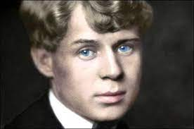
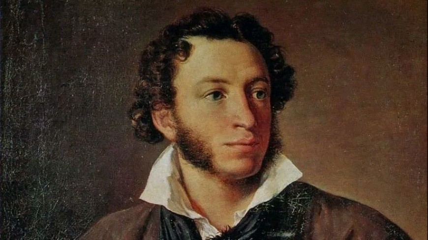

Мой любимый поэт

Белая берёза
Белая берёза
Под моим окном Принакрылась снегом, Точно серебром. На пушистых веткахСерге́й Алекса́ндрович Есе́нин

К Чаадаеву
Любви, надежды, тихой славы
Недолго нежил нас обман,
Исчезли юные забавы,
Как сон, как утренний туман;
Но в нас горит еще желанье,
Под гнетом власти роковой
Нетерпеливою душой
Отчизны внемлем призыванье.